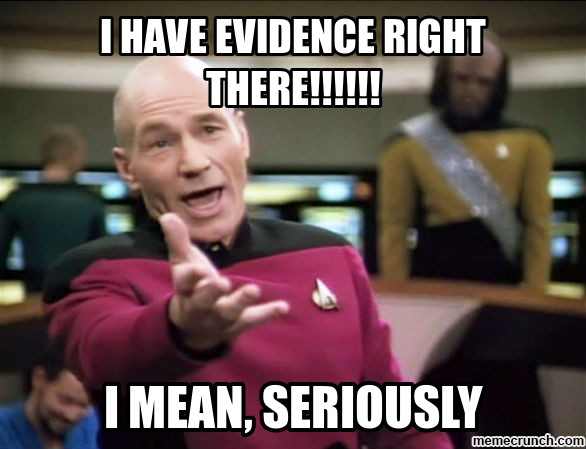

So..... What happens next?
So, you have reached the part of the Internet Zone where I talk directly to you, the audience about what happens next
What you see here on the end of this website portfolio is not the end for me, it is just the beginning of what I have planned and what I have in mind. I will continue to draw because that is one the main and big ways that I have to express myself and show the world what I have. I also plan to continue to make my videos, most notably my little comedy skits that I make on my Social Media stories from time to time and the characters that I have already created will be expanded and new ones are introduced as time goes on.
I also hope that I will eventually get around to starting my Youtube channel that I have been planning out for about 2 years now which will consist of many things including a mix of variety like blogs, how to guide, gameplays, deep opinions, Reviews, cooking, a bit of singing, Animation and even some of my old videos in the process.

I also hope to achieve some of my own personal goals, including getting back into acting so I can go on to become a famous Actor, Director or Animator. I continue to make new friends over the next few years. I also end up falling in love and telling someone I know how I truly feel (if my lingering Shyness Doesn’t get in the way). I graduate from my four-year term at College with High Honours and go on to do great things. I also hope to become more confident, but most importantly I continue to be who i am today because there is no one that is going to change who I am.
This brings us to the end of our little journey through the land known Simply as The Internet Zone, until me meet again I bid you farewell and hopefully our paths will cross once again in the near future. Only time will tell